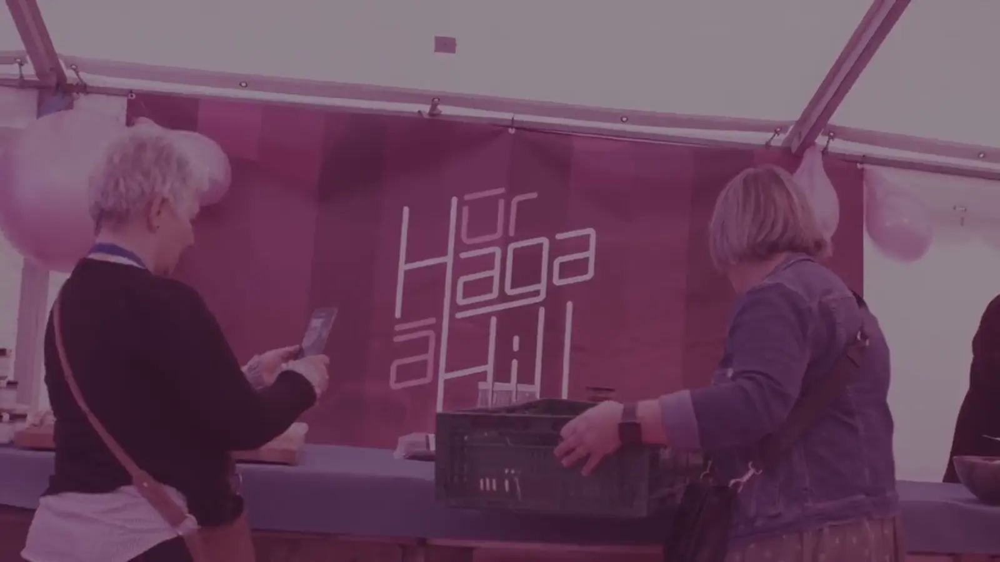

Hans hevur funnið gittarið aftur. Mánadagsmorgunin byrjar við einum riffi. Onkuntíð er tað bara so.

Side B · Innlit · Gerandisdagur
Dagligdagur á VIRKA. Tónleikaframførslur, hugni og smá hugskot, sum kanska blíva til nakað. Onkuntíð bara ein hugnalig løta og/ella ein góður koppur av kaffi.
Hans hevur funnið gittarið aftur. Mánadagsmorgunin byrjar við einum riffi. Onkuntíð er tað bara so.
Vit avdúka tað ikki her. Ongin kjansur, at vit her fara at avdúka, at vit hava skrivað eitt summarlag á VIRKA.

Bárður og morgunkaffin. Engin fer í gongd uttan.
Notatið frá fundinum:
“Tað má kenna seg, sum at tað kemur úr eini gomlu plátu.”
 Reel
Reel
Jóhanna ger okkurt nýtt. Vit veita ikki meira.

Bak myndatøkuna. Ein dagur við Immuk, ein dagur við góðum mati.

Janus prøvar nakað. Tað er ikki altíð, at tað virkar fyrstu ferð. Tað er rættiliga so, at tað skal vera.
Ein ting við at vera lítill bólkur: kaffivélin og ítøkligar idéir kunnu vera sama plássið.

Eitt nýtt avrik er á veg. Meira næstu viku.
Bólkur
Ein úr okkum spælir gittar í eini Guns N' Roses tribute-bólki um ummælini. Tað er ikki á CVinum, men tað kemur fram í arbeiðinum.

Sarah er lærlingur, men eitt tekningarbók er ikki bara fyri tey, sum eru í lære. Tað er fyri øll, sum hava hugskot.
Onkuntíð er ein góður telefonpassur betri enn ein góð slide.

Úr haga á hill, dagin fyri. Nakað er altíð fyrr, enn tað sær út.
Hetta er nakað av tí, sum lýsir okkum. Vilt tú síggja meira, so finnur tú okkum ma. á Instagram. Vilt tú tosa við okkum, kanst tú ringja til okkum á 78 10 10, ella tú dettur inn á gólvið. Vit hava verðins besta kaffi :)